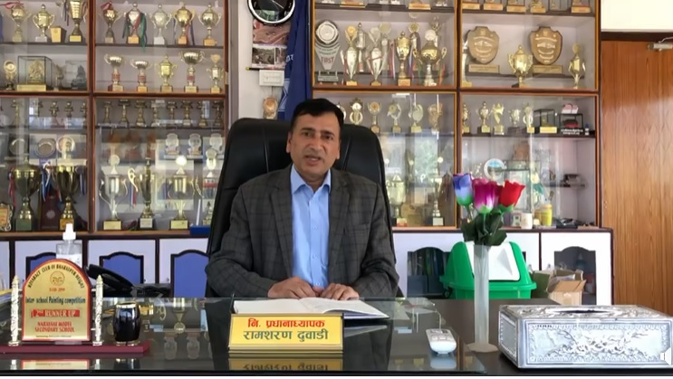
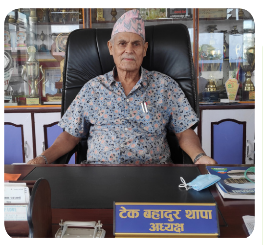

Tel.: +977-056-49362
Bharatpur-10,Chitwan
Tel.: +977-056-49362
Bharatpur-10,Chitwan
Narayani Model Secondary School was established in 2020 B.S. (1963/64 A.D.) as a night school. In its early days, the school faced numerous challenges to keep classes running. Initially, classes were conducted at Bharatpur Secondary School and later at Chitwan Secondary School. After seven years of perseverance, the school moved to its own premises in 2027 B.S., where a seven-room building was constructed to accommodate the students.
From 2031 B.S., the school began conducting secondary-level classes during the night while offering lower secondary classes during the day. However, by 2037 B.S., due to the difficulties of running nighttime classes, the school transitioned to morning sessions. Later, all classes were held exclusively during the daytime. Over time, the school expanded its offerings: primary-level classes began in 2039 B.S., nursery classes in 2050 B.S. and +2 programs in 2061 B.S.
Narayani Model Secondary School offers classes from Nursery to Grade 10 and +2 programs in Science and Management, affiliated with the National Examinations Board (NEB) of Nepal. The school also runs a Diploma in Information Technology program in collaboration with the Council for Technical Education and Vocational Training (CTEVT).
Over the years, Narayani Model Secondary School has produced outstanding results in national examinations and has a strong track record of students excelling in higher education and professional careers. The school has also earned accolades in various academic and extracurricular competitions at regional and national levels.
Narayani Model Secondary School stands as a shining example of what a modern educational institution can achieve. With its focus on academic rigor, character development, and extracurricular enrichment, the school continues to shape the future leaders of tomorrow.
|  |
Welcome to Narayani Model Secondary School; a government school with a district and successful culture of students learning together and supporting and encouraging each other to do their best. Our central purpose is to develop our students learning and wellbeing and we know the driver for this development is our focus on continuous improvement of our teachers and students through fostering genuine student voice. We are focused on an amicable school environment which is absolutely necessary to provide such education. As a temple of learning, we believe in marking our students not only proficient for career preparation but also well-equipped to face challenges in life head-on. I wish you all the best for your days. Thank you ! |
|---|
|  |
It is my proud privilege to warmly welcome you into the Narayani Model Secondary School, dedicated to develop skilled students who persue their interest and strengths students merge into the society building a strong generations for a better world tomorrow through dynamic education. I am proud of our long and rewarding history of achievement in education field. I promise you for holistic development of our children in the school. We are committed to provide vibrant learning environment in our school want to ensure we are always looking for ways to improve. We are proud of the opportunity to work in partnership with you and your child. |
|---|